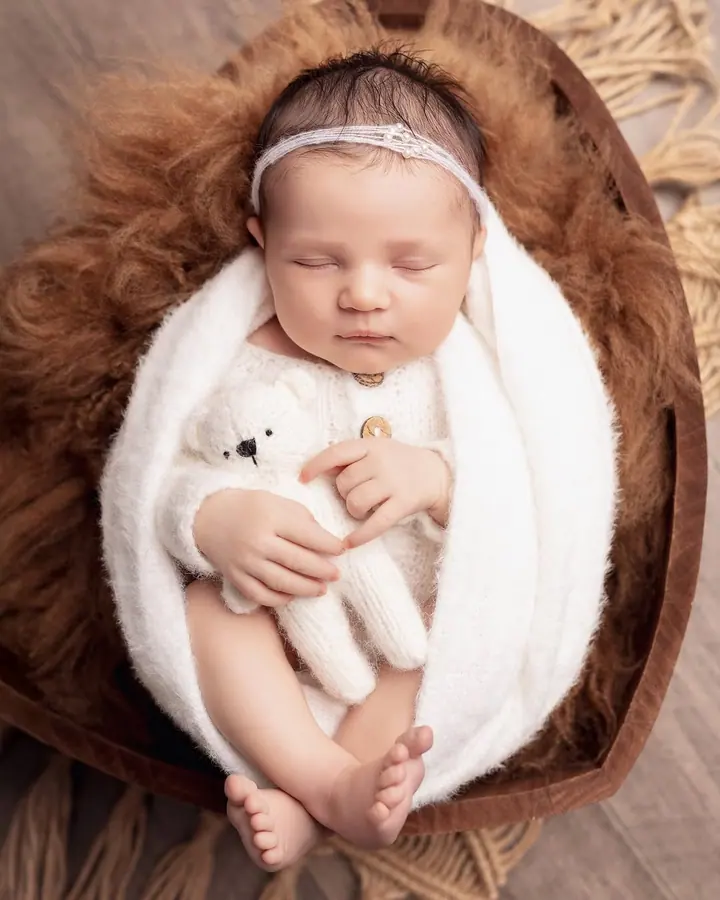
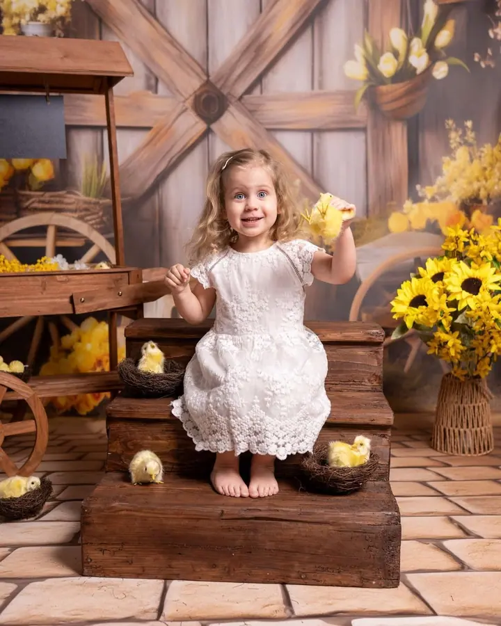
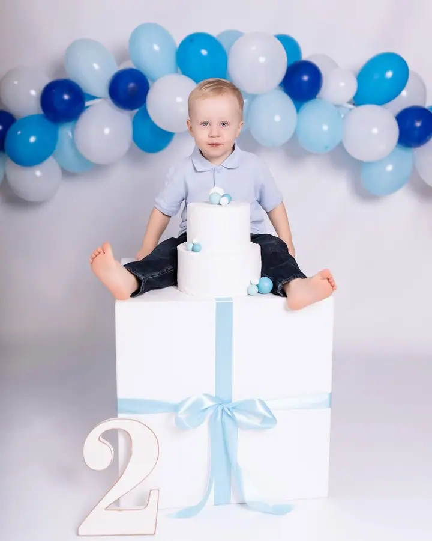
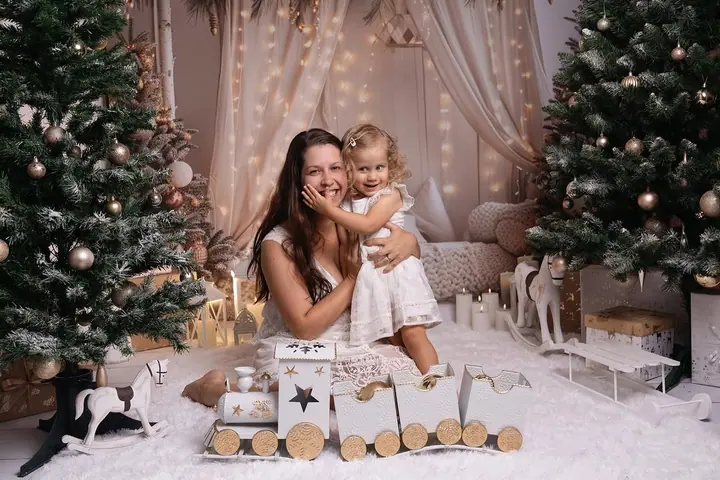
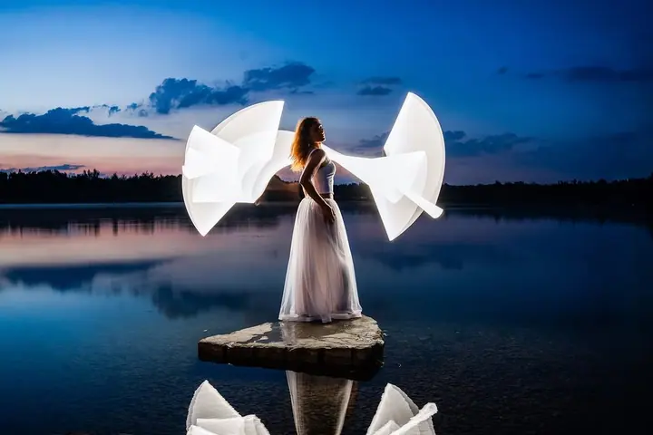

Rodinné a dětské focení
Fotím rodiny, děti i narozeninová focení, v ateliéru v centru Ostravy nebo venku, nejčastěji v Komenského sadech či Bělském lese. Domácí mazlíčci jsou na focení vždy vítáni.





Jmenuji se Veronika Vlhová a jsem rodinná, portrétní a svatební fotografka z Ostravy. Fotím miminka, malé oslavence i celé rodiny ve svém ateliéru v centru Ostravy nebo venku v přírodě. Chci Vám ukázat, že i fotografování může být skvělý zážitek.
Více o mně„Ukáži Vám, že i fotografování může být skvělý zážitek plný smíchu a pohodové atmosféry!“
— Veronika Vlhová
Fotím rodiny, děti i narozeninová focení, v ateliéru v centru Ostravy nebo venku, nejčastěji v Komenského sadech či Bělském lese. Domácí mazlíčci jsou na focení vždy vítáni.
Miminka fotím bez aranžování, balení do uzlíčků a nuceného uspávání, především v náručí rodičů v přirozených pozicích. Ráda za Vámi přijedu i do porodnice na focení Fresh 48.
Portréty v ateliéru i v exteriéru podle Vaší představy, nebo celé v mé režii. Na focení si můžete půjčit oblečení z mé fotošatny.
Na svatby jezdím fotit ve dvou s manželem, aby nám žádný důležitý moment neunikl. Nesnažíme se o dokonalé pózy, chceme zachytit to, co se děje mezi Vámi.
Jmenuji se Veronika a fotím v Ostravě rodiny, děti, miminka, maminky v očekávání i svatby. Mám ateliér v centru města, kousek od Nové radnice, s dětským koutkem, přebalovacím pultem, kávou a čajem. Tatínci si po pár rodinných fotkách můžou v klidu sednout na gauč ve vedlejší místnosti.
Při focení nekoukám na hodinky. Na každé focení mám vyhrazeno dost času a končíme, až máme obě strany pocit, že je nafoceno všechno. Když máte jasnou představu, ráda ji s Vámi proberu. Když ne, ráda se toho ujmu sama a focení připravím tak, aby Vám sedělo.
Celoročně ráda fotím i venku, nejčastěji v Komenského sadech nebo v Bělském lese, ale klidně přijedu i na Vaše oblíbené místo. Na svatby jezdím s manželem, abychom žádný důležitý okamžik nepropásli.
Napíšete mi a probereme, jaké focení si přejete. Klidně mi předem pošlete fotky, které se Vám líbí, ať víme, kam míříme.
Poradím Vám s oblečením. Nejlépe fungují neutrální nebo pastelové barvy a těhotenské šaty i oblečení pro děti si můžete půjčit z mé fotošatny.
Sejdeme se v ateliéru v centru Ostravy nebo venku. Na hodinky nekoukám, fotíme v klidu, dokud nemáme nafoceno všechno.
Do týdne po focení Vám pošlu náhledy a Vy si vyberete fotky k úpravě. Další fotky můžete dokoupit nebo přejít na větší balíček.
V centru Ostravy na ulici 30. dubna 560/11, kousek od zastávek Důl Jindřich, Nová radnice a Husův sad. Ateliér není bezbariérový, ale s kočárkem Vám ráda pomůžu a uvnitř pro něj máte vyhrazené místo.
Hlavně to, v čem se cítíte pohodlně. U rodinného focení se nejvíc osvědčují neutrální barvy jako šedá, bílá, béžová a černá, nebo pastelové odstíny. Klidně si přineste víc variant, během focení je spolu vyzkoušíme.
Miminka fotím v ateliéru bez aranžování, balení do uzlíčků a nuceného uspávání, hlavně v náručí rodičů. Vítaní jsou sourozenci i širší rodina a ráda zachytím i intimnější chvíle, jako je kojení.
Balíček mini s 5 upravenými fotkami stojí 1 700 Kč, standart s 10 fotkami 2 500 Kč a prémium s 20 fotkami 3 800 Kč. Každá fotka navíc stojí 200 Kč. Svatby fotím v půldenním balíčku za 18 000 Kč nebo celodenním za 25 000 Kč.
Určitě, domácí mazlíčci jsou na focení u mě vždy vítáni.
veru-foto@seznam.cz
Ostrava · Komenského sady · Bělský les